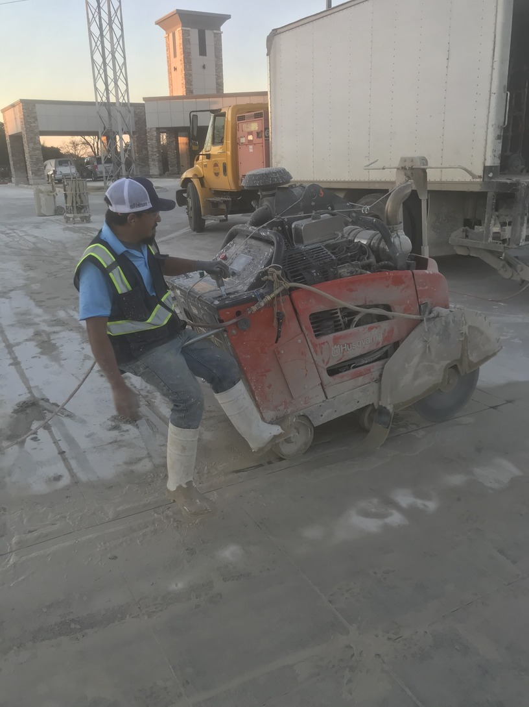
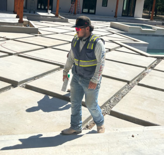

Our Team

Daniel Guillen
Owner and Concrete Cutter
Over 5 years
of experience cutting concrete and over 10 years of
experience of running a business. Outside of his
business, Guillen enjoys taking care of his many animals
in his land in the rural part of Texas.

David Guillen
Head Concrete Cutter and Operations Manager
Over 3 years
of experience cutting concrete.
Diocelina Guillen
Over 4 years of experience
of handling finances for the company. Outside of the company
Guillen works as a full time teacher at a middle school, she
currently has a master's in Education Administration from
Texas A&M at Commerce.